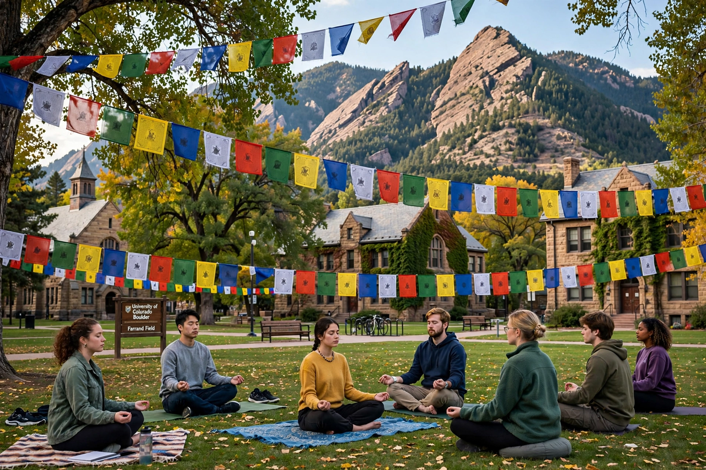

Naropa University
| Naropa University | |
|---|---|
 | |
| Type | Private university |
| Established | 1974 |
| Founder | Chögyam Trungpa |
| Location | Boulder, Colorado, United States |
| Named for | Naropa, Indian Buddhist scholar |
Naropa University is a private university in Boulder, Colorado, United States. Founded in 1974 by the Tibetan Buddhist teacher Chögyam Trungpa, it is North America's only Buddhist-inspired, ecumenical institution of higher education, known for its emphasis on "contemplative education" — integrating sitting meditation and mindfulness practice with conventional academic study.
History
Trungpa founded the Naropa Institute in 1974, naming it for Naropa, the 11th-century Indian scholar-saint of Nalanda. In its first summer sessions, the institute famously hosted poets Allen Ginsberg and Anne Waldman, who founded the Jack Kerouac School of Disembodied Poetics. The institute gained regional accreditation in 1986 and became Naropa University in 1999.
Academics
Naropa offers undergraduate and graduate degrees in fields including creative writing and poetics, psychology (notably contemplative and somatic counselling), religious studies, environmental studies, music, and the visual and performing arts. All students undertake contemplative practice as part of the curriculum. Its graduate programmes in clinical mental health counselling are among its largest enrolments.